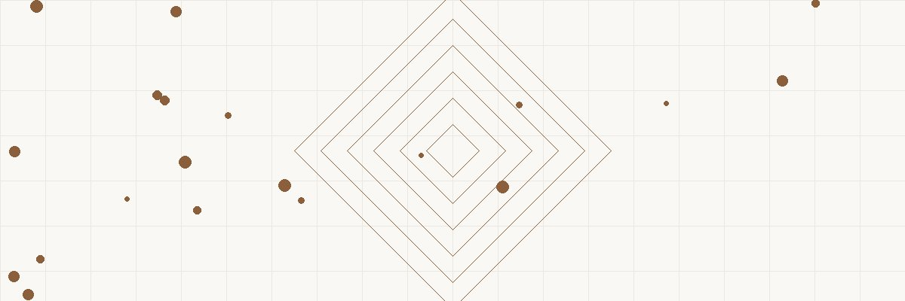

APPRECIATED ASSET CHARITABLE BENEFITS TO YOU
($3M stock, $200K REMAINDER TRUST ─────────────────
basis) ═══════════════════ • Immediate charitable
───────────────── ──╲ ╱── deduction (~$800K)
• Donate stock to ───╲ ┌────────────┐╱─── • Lifetime income
CRT (irrevocable) ────╳─│ CRT │─╳── stream (5-8%/year)
• CRT sells stock ───╱ └────────────┘╲─── • No capital gains
= NO cap gains tax ╱ ╲ on the sale
• Reinvests full $3M • Tax-free
diversification
DURING YOUR LIFE: AT YOUR DEATH:
───────────────── ═══════════════════ TOTAL BENEFIT:
• CRT pays you 6% • Remainder goes to ─────────────────
= $180K/year charity (tax-free) • Avoided $667K in
• Taxable as • Estate tax excluded cap gains tax
ordinary/cap gain • Charity gets $2M+ • $800K deduction now
• CRT grows tax-free • You got $4M+ in • $4M+ lifetime income
inside trust lifetime income • Charity gets rest
────────────────────────────────────────────────
THE MATH:
Sell stock directly: $2.8M gain × 23.8% = $666,400 tax
CRT sells stock: $0 tax. Reinvests full $3M.
CRT pays 6%/year for 25 years: $4.5M total income
Charitable deduction (present value of remainder): ~$800K
FADE IN: An estate planning attorney's office lined with leather-bound books. HELEN WHITFIELD (65, retired CEO, philanthropic) and her husband RAYMOND (67, former engineer, numbers-driven) sit across from their attorney STUART COLE (55, bow tie, trust and estate specialist). HELEN Stuart, we have $3 million in company stock. My cost basis is $200K from when I joined as employee number twelve. We want to diversify, but our accountant says we'll owe over $660,000 in capital gains tax if we sell. RAYMOND That's a quarter of our stock. Gone. STUART What if I told you there's a way to sell that stock, pay zero capital gains tax, receive a guaranteed income stream for life, get a charitable deduction of approximately $800,000 THIS year, and leave the remainder to a charity you love? HELEN (exchanging a glance with Raymond) All of those things. Simultaneously. STUART Section 664. The Charitable Remainder Trust. And for your situation — highly appreciated concentrated stock — it's precisely what the code was designed for.
Stuart draws a flow diagram on his legal pad. STUART Here's the structure. You create an irrevocable trust — the CRT. You donate your $3M of stock to the trust. That donation gives you an immediate charitable deduction. He continues: STUART (CONT'D) The trust then sells the stock. Because the CRT is a tax-exempt entity — like a charity — it pays ZERO capital gains tax on the sale. The full $3 million stays invested. RAYMOND Instead of $2.34 million after tax. STUART Exactly. The CRT reinvests the full $3M into a diversified portfolio. Then it pays you — the income beneficiaries — a fixed percentage each year for life. Let's say 6%. That's $180,000 per year. HELEN For how long? STUART For both of your lifetimes. When the surviving spouse passes, whatever remains in the trust goes to the charity you designated. The "charitable remainder" — hence the name. RAYMOND And we can't get the principal back? STUART Correct. The donation to the CRT is irrevocable. You give up ownership of the stock permanently. In exchange, you get: no capital gains tax, a charitable deduction, lifetime income, and the satisfaction of eventually funding your charity. It's a trade — and for most people with appreciated assets, the math overwhelmingly favors the trade.
STUART There are two flavors. A CRAT — Charitable Remainder Annuity Trust — pays a fixed dollar amount each year. If you fund it with $3M and choose 6%, you get $180,000 per year regardless of how the investments perform. HELEN Fixed forever? STUART Fixed forever. Good in a bad market — you still get $180K. But it doesn't grow with inflation. He draws option two: STUART (CONT'D) A CRUT — Charitable Remainder Unitrust — pays a fixed PERCENTAGE of the trust's value each year, revalued annually. Six percent of $3M in year one = $180K. If the trust grows to $3.5M by year three, you get 6% of $3.5M = $210K. If it drops to $2.8M, you get $168K. RAYMOND So the CRUT adjusts with market performance? STUART Right. For inflation protection and upside participation, most clients choose the CRUT. Your income grows as the portfolio grows. The trade-off: it can decrease in bad years. HELEN Can we set the percentage at anything? STUART The IRS requires: minimum 5%, maximum 50%. And there's a separate test: the present value of the charitable remainder must be at least 10% of the initial contribution. At your ages (65 and 67), a 6% payout rate easily satisfies the 10% remainder test. Higher rates — 7%, 8% — might still work but we'd need to run the calculation.
STUART In the year you fund the CRT, you receive an immediate income tax deduction equal to the present value of the charitable remainder. That's the amount the IRS projects will eventually go to charity, discounted to present value. RAYMOND How do they calculate that? STUART Using IRS actuarial tables, the Section 7520 rate (a published interest rate), and your life expectancies. At your ages with a 6% payout rate and current 7520 rates, the charitable deduction is approximately $800,000. He shows the impact: STUART (CONT'D) $800,000 deduction at your 37% marginal rate = $296,000 in federal tax savings in the year you fund the trust. If your income isn't high enough to use the full deduction this year, you carry it forward for up to five additional years. HELEN So we save $296K in income tax PLUS we avoided $666K in capital gains? STUART The capital gains avoidance is inside the trust — you don't personally avoid it; the trust (as a tax-exempt entity) doesn't owe it. But the net effect: $296K in direct tax savings via the deduction, plus the entire $660K in gains avoiding taxation because the CRT sold it. Your economic benefit is substantial. RAYMOND And we get income for life on top of that. STUART For life. Both lives. The income stream is the centerpiece — the tax benefits are the sweeteners.
RAYMOND How is the $180K per year taxed when we receive it? STUART The CRT distributions follow a "tiering" system. Four tiers, paid in order: He lists them: STUART (CONT'D) Tier 1: Ordinary income first. Any dividends, interest, or ordinary income earned inside the trust comes out taxed at ordinary rates (up to 37%). Tier 2: Capital gains next. After ordinary income is exhausted, distributions come from accumulated capital gains (taxed at 20% + 3.8% NIIT). Tier 3: Other income. Tax-exempt income if any. Tier 4: Return of corpus (principal). Tax-free — it's return of your contribution. HELEN So it's not all taxed the same? STUART No. In your case, the CRT will first recognize $2.8M in capital gains from selling the stock. Over time, your annual distributions will carry out those gains to you — but spread over many years at the lower capital gains rate. Eventually, once the gains are exhausted, distributions shift to ordinary income from dividends and interest. RAYMOND So we're spreading that $2.8M gain over 20+ years instead of paying it all at once? STUART Exactly. The timing of tax recognition is dramatically different. You never pay $666K in one year. Instead, a portion of each annual distribution carries some capital gain — maybe $60-80K per year over 15+ years. And meanwhile, the full $3M is working for you, growing and compounding.
STUART Now, I know what Raymond is thinking. "If the remainder goes to charity, my kids get nothing." RAYMOND (nodding) That's exactly what I'm thinking. STUART Standard solution: a Wealth Replacement Trust. You take some of the tax savings and income from the CRT and use it to fund an Irrevocable Life Insurance Trust — an ILIT — that owns a life insurance policy on both of you. He draws the complete picture: STUART (CONT'D) Year one: You fund the CRT with $3M of stock. You receive $180K/year income and $296K in tax savings. You use $30K/year of that income to pay premiums on a $3M survivorship life insurance policy inside an ILIT. Result at death: Charity receives the CRT remainder (~$2M-3M). Your children receive $3M from the life insurance policy — estate-tax-free and income-tax-free (inside the ILIT, it's excluded from your estate). HELEN So our kids get the same amount they would have inherited anyway? STUART The same or MORE. The stock was worth $3M. Your kids would have received $3M minus estate taxes (40% above exemption) and income taxes if they sold. With the ILIT: they get $3M completely tax-free. Plus the charity gets $2-3M. Everyone wins. RAYMOND Including the IRS? STUART The IRS gets less. That's why Congress created it — to incentivize charitable giving so thoroughly that even self-interested people choose it.
STUART One more variation worth knowing: the NIMCRUT — Net Income with Makeup Charitable Remainder Unitrust. It's the most flexible CRT structure. HELEN What's different? STUART A standard CRUT pays you 6% every year regardless. A NIMCRUT pays you the lesser of the stated percentage OR the trust's actual net income. If the trust earns less than 6% in a year — because you invested in growth stocks that don't pay dividends — you get less. BUT the shortfall accumulates in a "makeup account." He shows the benefit: STUART (CONT'D) In years you don't need income (you're still working, collecting Social Security, etc.), the NIMCRUT invests for growth and distributes little. The makeup account grows. When you DO need income — say, at age 72 — the trust shifts to income-producing investments and pays you the current year's percentage PLUS all the accumulated makeup. RAYMOND So we can defer our income from the CRT to years when our tax rate is lower? STUART Precisely. If you fund the CRT at 65 but don't need income until 72, the trust grows tax-free for seven years with no mandatory distributions. Then at 72, when you're in a lower bracket, you turn on the income and even get the makeup amounts. Tax rate arbitrage built into the trust design. HELEN That's brilliant for someone retiring early but not needing the money immediately. STUART Exactly the use case. And the makeup provision means you never lose the right to that income — it's just deferred to when you want it.
STUART The CRT works best with highly appreciated assets — assets where the gain is a large percentage of the value. Your stock has $2.8M in gain on $3M value — that's 93% gain. Ideal. He lists other good candidates: STUART (CONT'D) Best assets for a CRT: — Concentrated stock positions (your case) — Appreciated real estate (avoid the capital gains and 25% depreciation recapture) — Closely held business interests before a sale — Cryptocurrency with massive gains — Appreciated collectibles (normally taxed at 28%) Less ideal: — Cash (no capital gains benefit — just use a DAF instead) — Assets with losses (you WANT to realize losses, not avoid them) — Assets you might need back (CRT is irrevocable) RAYMOND What about our rental property? STUART If it's appreciated significantly and you're tired of managing it — excellent candidate. The CRT sells it, avoids both capital gains AND depreciation recapture tax (which would be 25%), and converts your illiquid real estate into a diversified income stream. No 1031 exchange timeline pressure, no new property to manage. HELEN We've been thinking about selling the beach house... STUART Let's model that as a second CRT. Different properties, different trusts, different income streams. You can have multiple CRTs, each with its own schedule and payout structure.
STUART Let me be transparent about the costs and limitations. He lists: STUART (CONT'D) Setup costs: Attorney fees for drafting the trust ($5,000-15,000). Annual administration: trustee fees (often 1% of assets), tax return preparation (Form 5227: $1,000-2,000/year). Limitations: — Irrevocable. You cannot get the principal back. Period. — Must pay at least 5% annually (standard CRT, not NIMCRUT). — The remainder value must be at least 10% at funding. — You cannot be the sole trustee (conflict of interest). Use a corporate trustee or co-trustee. RAYMOND So we lose access to $3M of principal forever? STUART Yes. But you GAIN $180K per year for life (likely $4-5M total over your lifetimes), $296K in immediate tax savings, and avoidance of $666K in capital gains tax. The principal you "lost" generates more value than the principal you would have kept — because the compounding starts on 100% of the assets rather than 78% after tax. HELEN And if we need emergency access to a large sum? STUART That's what the other $2M in your portfolio is for. Never put ALL your assets in a CRT. Keep liquid reserves outside. The CRT is for the concentrated, appreciated portion you're ready to convert into income. STUART (CONT'D) The general rule: fund the CRT with assets you'd sell anyway but hesitate because of the tax hit. If you'd never sell the stock regardless of tax consequences, the CRT may not be the right vehicle.
Helen and Raymond look at each other — the kind of look couples have when they've been married forty years and can communicate in glances. HELEN (to Stuart) Set it up. The CRUT. Six percent. Beneficiary: the medical school scholarship fund we started twenty years ago. STUART (smiling) I'll have the draft trust document to you next week. We'll fund it with the stock transfer by month-end, which gives you the deduction for this tax year. He walks them to the door. STUART (CONT'D) IRC Section 664 — Charitable Remainder Trusts. You eliminate capital gains on the sale. You get a massive charitable deduction. You receive income for life. And your favorite charity receives the remainder when you're done. Four benefits. One structure. And the IRS blesses every piece of it because the code was specifically written to make this work. RAYMOND This feels like the tax code actually working FOR us for once. STUART (laughing) That's because it IS working for you. The charitable sections of the code are the most generous provisions Congress has ever written. They WANT you to give. They just reward you spectacularly for doing it through the right structure. Helen and Raymond walk out arm in arm — lighter by $3M in stock, heavier by a lifetime of income and the knowledge that their scholarship fund will receive millions more than they ever could have given directly. FADE OUT. — END —